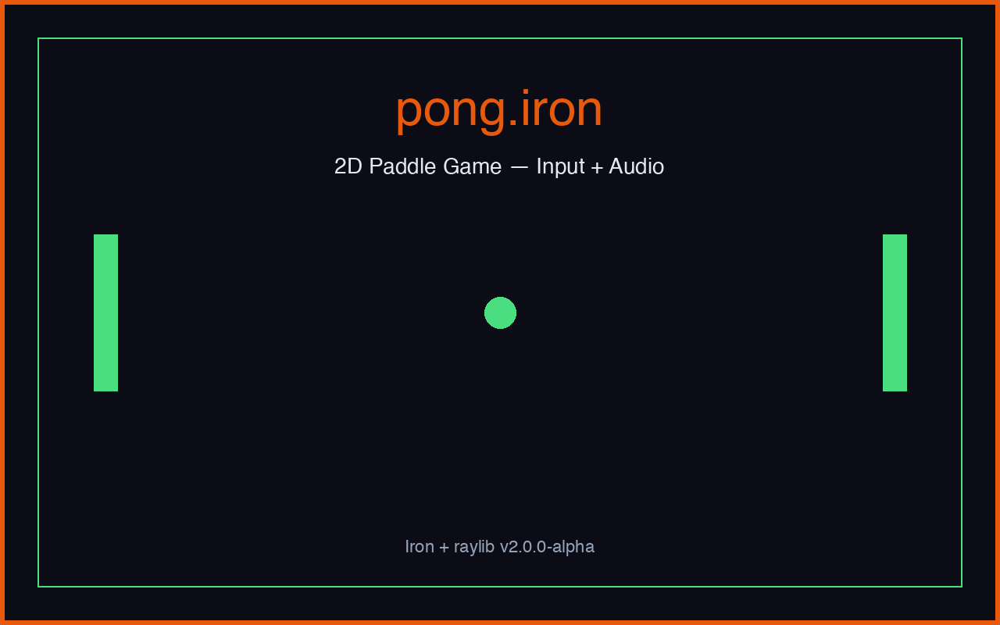
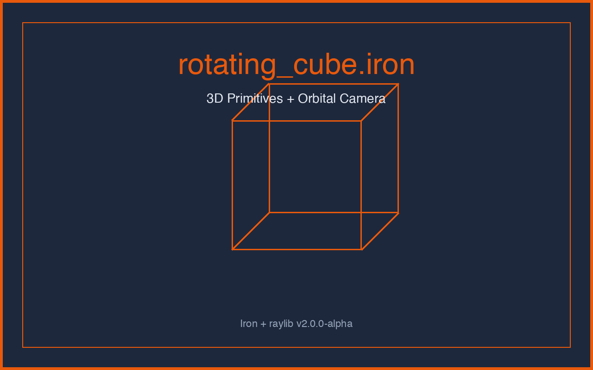
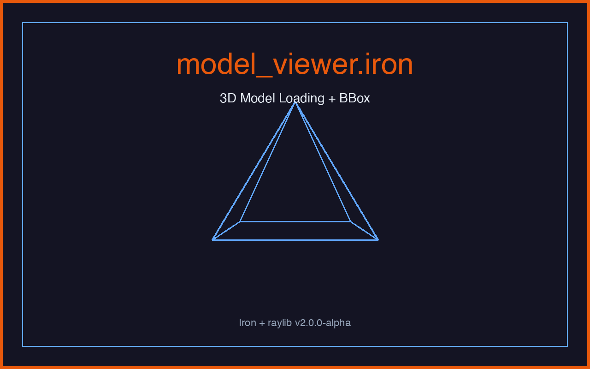
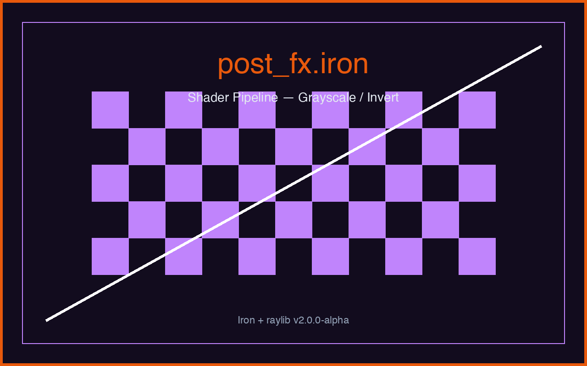
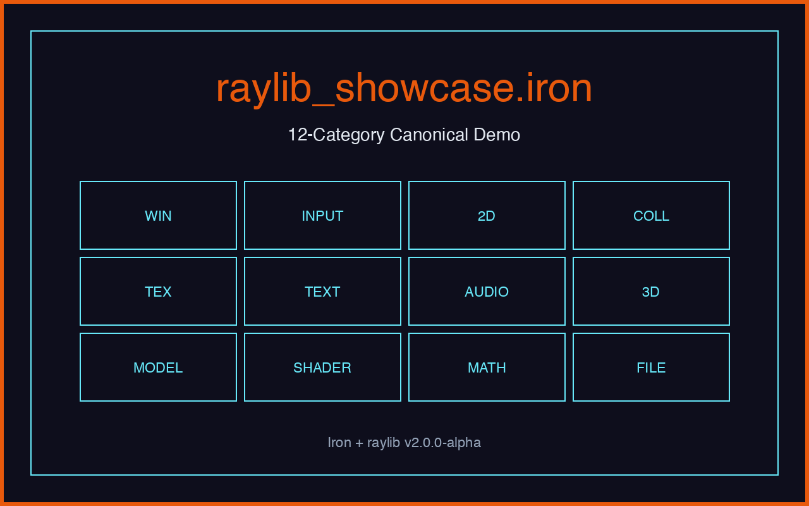

pong
Two-player paddle game. Left player uses W/S, right player uses the arrow keys, collisions play a bounce sound, and the game moves through title, play, and game-over states from one main loop.
5 example programs showing the raylib binding in action. Every example builds with iron build examples/<name>/<name>.iron and runs on both native and web targets.

Two-player paddle game. Left player uses W/S, right player uses the arrow keys, collisions play a bounce sound, and the game moves through title, play, and game-over states from one main loop.

Orbital Camera3D rendering a colored cube with a wireframe overlay over a 10×10 grid. A compact 3D starting point.

Loads an OBJ model with a procedural fallback, draws a wireframe mesh and bounding box under an orbital camera, and shows the Model.is_valid asset-safety pattern.

3D scene rendered to a RenderTexture and then post-processed through GLSL shaders. SPACE toggles between grayscale and invert, demonstrating per-frame uniform updates.

Single-file showcase covering the full public raylib surface in this binding: window, input, 2D drawing, collision, textures, text, audio, 3D drawing, models, shaders, math, and files. Builds on native and web from the same source.
Every example compiles to a native binary from the repository root. The .iron file's basename becomes the output binary name (e.g. rotating_cube.iron → ./rotating_cube).
# Clone + build the compiler once
git clone https://github.com/victorl2/iron-lang.git
cd iron-lang && make
# Build and run any of the 5 examples
./build/ironc build examples/rotating_cube/rotating_cube.iron
./rotating_cube
# Web target from the same source
./build/ironc build --target=web examples/raylib_showcase/raylib_showcase.ironEach example is designed to be self-contained — copy the source, swap the asset paths, and the file still builds.